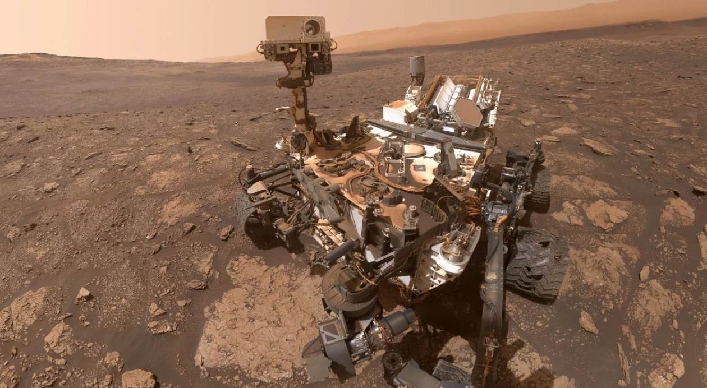

Curiosity Rover (2012 – Present)

History
The rover’s mission is to determine if Mars once had the right environmental conditions for life sources. Curiosity has found chemical and mineral evidence of habitable environments and insight into the planet's geological and potential biologic history.
Discoveries
Curiosity has discovered organic molecules that could be linked to life. The discovery of nitrogen heterocycles and methyl benzoate suggests that Mars years ago had conditions suitable for life.
Design Features
The drill is 10 feet long, 9 feet wide, and 7 feet tall. It has a rock-vaporizing laser, 17 cameras, and a drill to collect powdered rock samples. The rover includes features that allow it to operate with less energy from its nuclear power source. The wheels can handle sharp and uneven ground.